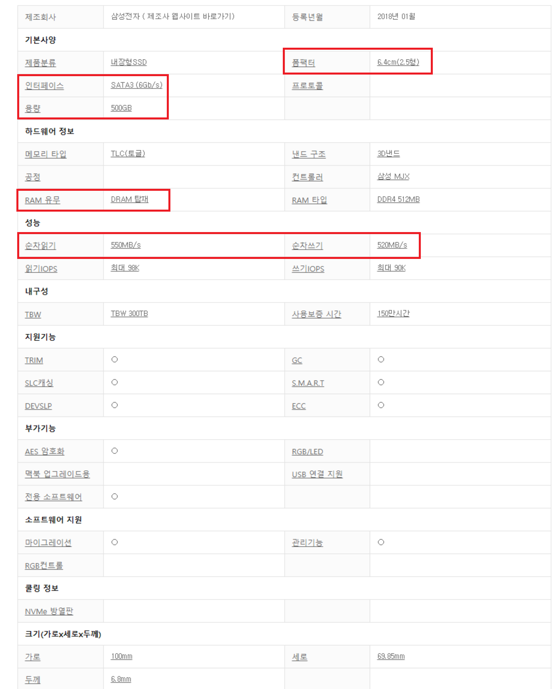

저장장치
HDD는 Hard Disk Drive의 약자로써 비휘발성, 순차접근이 가능한 컴퓨터의 보조 기억장치입니다. 컴퓨터에서 장기 기억이 필요한 요소를 저장하는데에 사용됩니다.
SSD는 Solid State Drive의 약자로써 직역하면 고형 상태 보조기억장치 입니다. 반도체 드라이브라는 이름으로 불리기도 합니다. 용도는 하드디스크와 동일하지만 구조부터 다르기때문에 명확히 구분해야 할 필요가 있습니다.
1. 구조적인 차이가 있습니다. HDD는 자기장의 원리로 자성 물질이 있는 원판에 자기를 정렬하는 원리로 기록하고 지웁니다. 그래서 데이터가 있는 지점까지 물리적으로 헤드가 직접 가서 읽는 방식이지만, SSD는 전기 신호로 해결합니다.
2. 성능적인 차이가 있습니다. SSD는 소음이 존재하지 않고 전력 소모가 적으며, 무엇보다 랜덤 엑세스 속도(임의의 파일을 찾는 데에 걸리는 속도)가 빠릅니다.
3. 내구성의 차이가 있습니다. SSD는 자기장으로부터 안전하고 충격에 강합니다.
4. 가격적인 차이가 있습니다. SSD가 HDD보다 많이 비쌉니다.

출처 : 다나와 닷컴 SAMSUNG 860EVO 500GB제품 상세설명
폼팩터 : 일반적으로 2.5인치와 m.2 형태를 사용합니다. HDD의 경우 3.5 인치를 일반적으로 사용하며 '디스크 크기'라는 이름을 사용합니다.
인터페이스 : 메인보드에 연결하는 방식을 의미하며 SATA3 방식과 PCIe3.0(4.0)을 주로 사용합니다. PCIe3.0(4.0)이 SATA3 방식에 비해 더 빠릅니다. 가격적인 차이 또한 존재합니다.
용량 : 사용할 저장장치의 용량을 의미합니다.
RAM유무 : SSD를 구매할 계획이라면 성능상의 격차가 매우 심하므로 무조건 DRAM이 탑재된 모델을 사용하여야 합니다.
순차읽기/쓰기 : 저장장치의 '순차읽기/쓰기'속도를 의미합니다. 성능을 구분하는 지표로써 사용 될 수 있으나, 일반 사용자가 체감하는 속도는 '랜덤읽기/쓰기'이므로 절대적인 지표는 아닙니다.
SSD부터 설명드리겠습니다. SSD의 경우 크게 두 종류로 나눌 수 있는데, PCIe 제품군과 SATA 제품군으로 많이 분류합니다. 일반적으로 PCIe제품군은 m.2 폼팩터를 이용하여 장착하여 m.2 SSD라고 부르기도 합니다.
본인이 추후 SSD를 증설할 의향이 있는 경우 SATA SSD를 권장합니다. 그 이유는 조립의 편의성에 있습니다. m.2 SSD는 메인보드에 존재하는 m.2 슬롯에 장착하고 나사를 조이기만 하면 되는 반면에
SATA SSD는 SATA케이블을 연결하고, 전원 케이블을 연결 한 후 케이스의 한 곳에 고정해야하는 불편함이 존재합니다. 따라서, 추후 업그레이드 여부에 따라 폼팩터를 결정하는 것이 좋습니다.
그 외 주의할 점이 있는데, PCIe와 SATA SSD의 순차쓰기/읽기 속도를 그대로 성능에 대입하면 안된다는 점입니다. 이는 다음 유튜브 영상을 참고하면 되겠습니다.
영상을 보면 알 수 있듯이, 대부분의 로딩 환경에서 큰 차이를 보이지 않고 있습니다. 이는 우리가 일반적으로 체감 할 수 있는 '로딩 속도'는 랜덤읽기/쓰기를 통하여 체감할 수 있기 때문입니다.
다음은 HDD입니다. HDD의 경우에는 '회전수' 에 주목하는 것이 좋습니다. 이는 HDD의 작동 방식이 물리적인 방식이기 때문에 발생하는 현상입니다. 일반적으로 7200RPM 제품과 5400RPM을 사용하는 제품이 있는데 7200RPM을 사용하는 것이 더 빠른 속도를 체감할 수 있습니다.